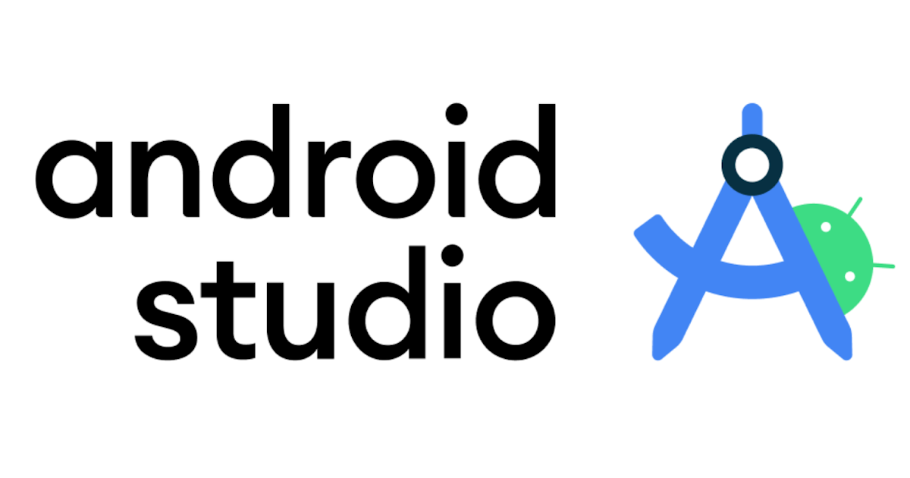

Featured Projects
Explore my experience building scalable solutions, from robust backend architectures to dynamic frontend interfaces and enterprise automation systems.
PXO
Grupo Optima
Designed and developed a web-based CRM system for insurance policy sales management. Implemented features such as sales tracking, customer relationship management, and data analytics for performance insights. Built automated email campaigns to support marketing efforts and integrated the platform with internal enterprise systems, improving workflow efficiency and data consistency.
KCRM - HCRM
Grupo Optima
Contributed to the development and maintenance of internal web-based CRM systems for managing vehicle sales for brands such as Honda and KIA. Supported the implementation of new modules and the enhancement of existing ones, including customer process management, sales tracking, and employee operations. Helped improve data organization, streamline workflows, and maintain system reliability within the organization.

App
Grupo Optima
Contributed to the development of a mobile application integrated with an internal enterprise system (SYGO). Implemented real-time communication using sockets to receive event-driven triggers and enable automated SMS notifications to employees. This functionality helped keep staff informed about updates in customer sales processes, improving communication and operational responsiveness.

App
Secretaria de Educacion del Estado de Durango
Contributed to the development of a mobile application for attendance tracking at internal events organized by the State Department of Education of Durango. Implemented QR code scanning for efficient check-in processes, ensuring accurate and real-time attendance registration. Additionally, supported the development of a web platform to access reports and analytics, providing insights into attendance metrics and event performance.
Macrosystem
Secretaria de Educacion del Estado de Durango
Contributed to the development of a large-scale system designed to manage multiple internal departments within the State Department of Education. Participated in building a school management module for secondary schools and teacher training institutions, including features for student records and academic tracking. Supported the implementation of an employee credentialing system for both administrative and educational staff, including ID generation and printing. Additionally, contributed to the geolocation mapping of schools across Durango and the development of analytics for student performance, grades, and institutional infrastructure.
USICAMM
Secretaria de Educacion del Estado de Durango
Designed and developed a web application using a custom MVC architecture in PHP, built from scratch to align with specific project requirements and improve workflow efficiency. The system supports internal processes for teacher allocation to schools, onboarding of new educators into the educational system, and management of job transfers between institutions, among other administrative operations.
Have a project in mind?
I’m open to collaborating on scalable backend development and modern web solutions. Let’s discuss how I can bring value to your team.